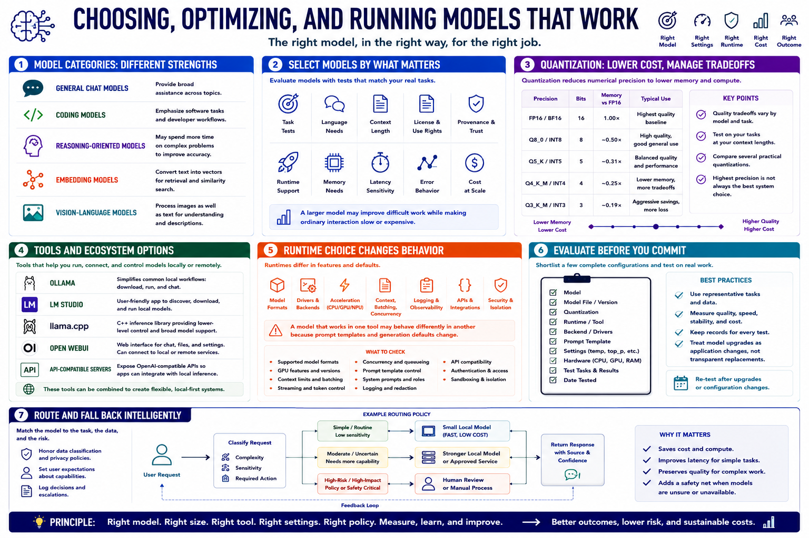

Selecting Models and Runtimes
Connecting to LMS... Progress: in progress

Narration
General chat models provide broad assistance. Coding models emphasize software tasks. Reasoning-oriented models may spend more time on complex problems. Embedding models convert text into vectors for retrieval. Vision-language models process images as well as text.
Select models by task tests, language needs, context, license, provenance, runtime support, memory, latency, and error behavior. A larger model may improve difficult work while making ordinary interaction slow or expensive.
Quantization reduces numerical precision to lower memory and compute requirements. Quality tradeoffs vary by model and task. Compare several practical quantizations instead of assuming the highest precision is always the best system choice.
Ollama and LM Studio simplify common local workflows. llama.cpp provides lower-level control for compatible models. Open WebUI offers a web interface that can connect to supported services. API-compatible servers help applications integrate with local inference.
Runtime choice affects model formats, drivers, acceleration, context, batching, concurrency, logging, APIs, and security. A model that works in one tool may behave differently in another because prompt templates and generation defaults change.
Shortlist a few complete configurations and evaluate them before committing. Record model, file, quantization, runtime, backend, prompt template, settings, hardware, and date. Treat model upgrades as application changes, not transparent replacements.
A model-routing or fallback policy can assign simple work to a small local model and escalate difficult requests to an approved stronger service or human. Routing must honor data classification and user expectations.